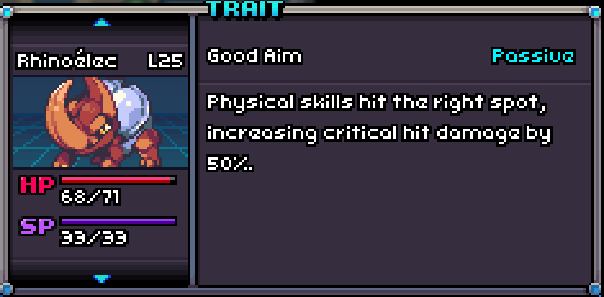
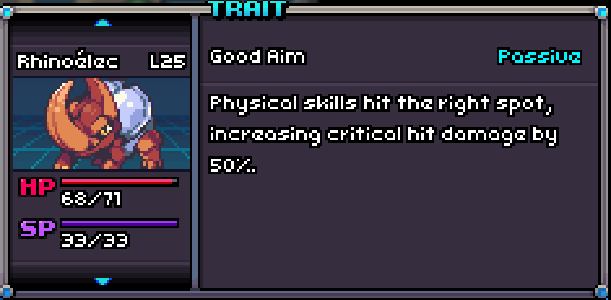

A Bazzer with Good Aim!
Good Aim
Good Aim is a passive trait that boosts the Critical Hit multiplier up to 2.25 times if the Coromon lands a crit with a Physical skill.

A Bazzer with Good Aim!
Good Aim is a passive trait that boosts the Critical Hit multiplier up to 2.25 times if the Coromon lands a crit with a Physical skill.
| # in Corodex | Name | Type | Traits | HP | Speed | Attack | Defense | Sp. Att | Sp. Def |
|---|